List of Codex entries of all Non-Dockable Megaship-classes
1. What classifies as a Non-Dockable Megaship?
There are many Megaships – from the Prison Ships of the Independent Detention Foundation to the Pilots Federation Rescue Ships, from the Superpowers Capital Ships to Brewer Corporation Drake Class Carriers, from the Generation Ships to Tiliala’s Lament of the Exiled Conservatives of Tiliala. Some of those are dockable or have exampels of being dockable, and are therefore not in scope of this introduction. Some are not dockable (Dredgers for example), but miss certain features: for example having a fixed route of waypoints (see below).
This introduction only looks at those Non-Dockable Megaships having fixed waypoints, on which they travel bi-weekly. They jump every 14 days on Thursday. In the following we will only talk about those as “Megaships”, and drop the “Non-Dockable” for brevity.
2. How to find Megaships?
Few Megaships are auto-resolved after jumping into a system. Most Megaships are revealed after a Nav-Beacon-Scan when returning to supercruise. All Megaships are revealed after a FSS-scan of the body they are orbiting*.
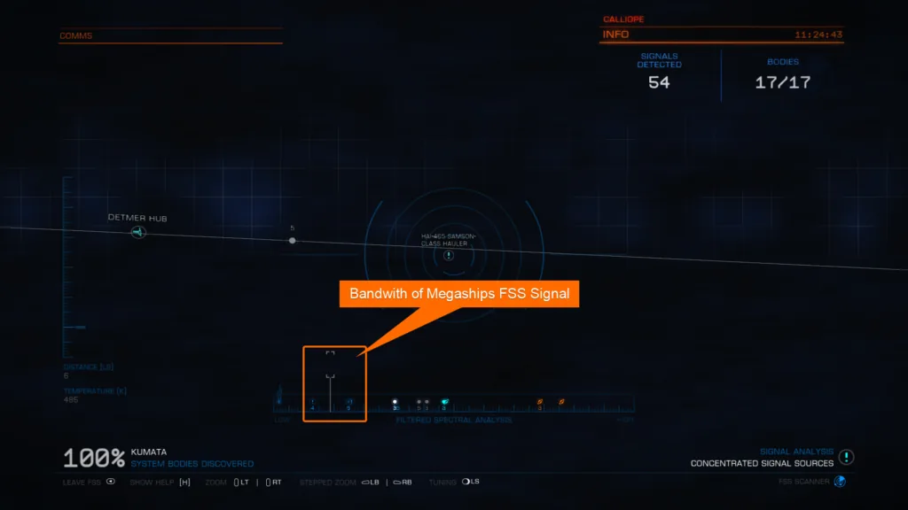
Fig. 2.1: Bandwith of a Megaships FSS Signal.
After its signal is resolved the megaships type and call-sign can be found in the Navigation Panel with a distinct icon.
Fig. 2.2: Megaship Navigation Panel Icon
___ * The reason for this unknown. A similar behaviour is known from Ressource Extraction Sites. Selling exploration data of the FSS scan does not change it.
3. How many and which Megaships are there?
As the time of writing, there are 7426 megaships recorded*. They come in 23 Types. This link to the Codex lists all megaship-classes. None of the types is extraordinary more rare or abundant than the others.
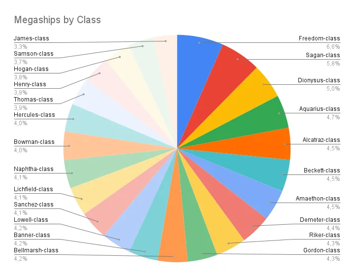
Figure 3.1: Types of Megaships
Dropping to real-space at the megaship its Sub-Type is shown under contacts. There are 7 sub-types, with Bulk Cargo Ships being the most abundant, and Survey Vessels being the rarest:
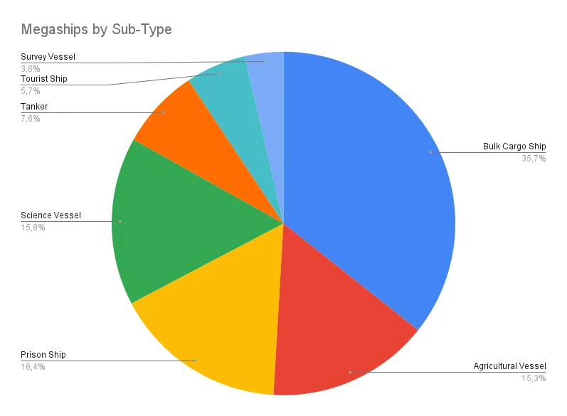
Figure 3.2: Classes of Megaships
___ * All of the statistics of total numbers of megaships have been drawn from CMDR Syleo excellent tool https://elite.laulhere.com/ExTool/, which uses Canonns EDMC plug-in data.
4. Sub-targets
After a scan of a Megaship contact with a Ships Data-Link-Scanner there are Sub-targets revealed. No megaship-type has all Sub-targets, and the distance from which they show depends on a ships sensor class and grade (and engineering).
Some of the Sub-targets can reveal further sub-targets after a Data-Link-Scan from close by.
4.1. Ship Log Uplink
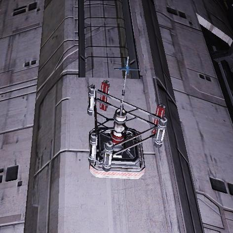
Figure 4.1.1: Ship Log Uplink
A Data-Link-Scan of a Ship Log Uplink results in a message in the ships Inbox interface with the megaships Flight Operations Plan. It lists all 6 waypoints and marks the current with “(*)”.
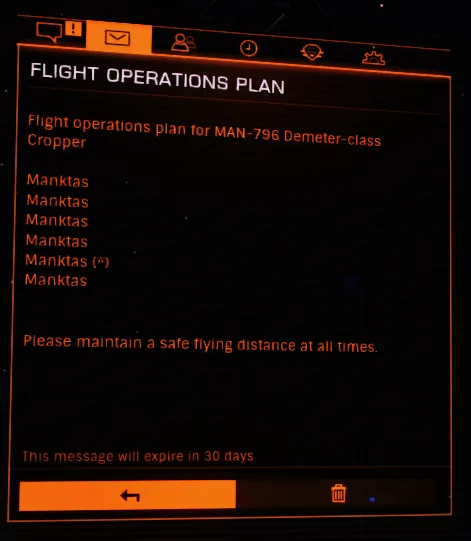
Figure 4.1.2 Example of an – albeit extraordinary – Flight Operations Plan
If you want to know at which of their waypoints all megaships are: the Canonn-controlled system of Wikmeang has at all time at least one Megaship present. Scan the Shiplog-Uplink with your Data-Link-Scanner to find out which is the current waypoint number for all megaships.
4.2 Fighter Bay
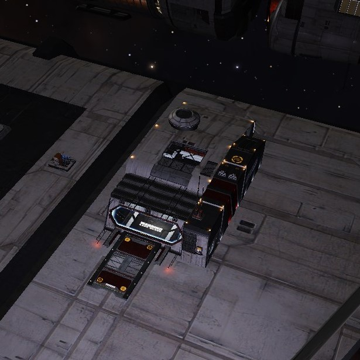
Figure 4.2.1 Fighter Bay
There are no subtargets of it*. __ * And nobody has seen it in use ever.
4.3 Power Generator
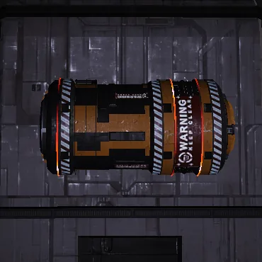
Figures 4.3.1 Power Generator
Can be destroyed by Weapons or Ramming. Often attacked during a Raid (see 6.).
4.4. Automated Defence Turrett
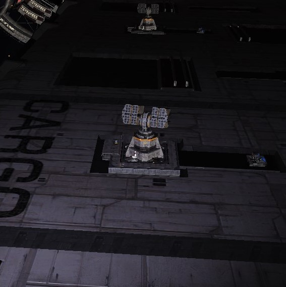
Figure 4.4.1 Automated Defence Turrett
Automated Defence Turrets are Numbered from 0-x.
Data-Link-Scan of an Automated Defence Turrett reveals a Subtarget Defense System Generator for that Turrett, which can be close by or further away.
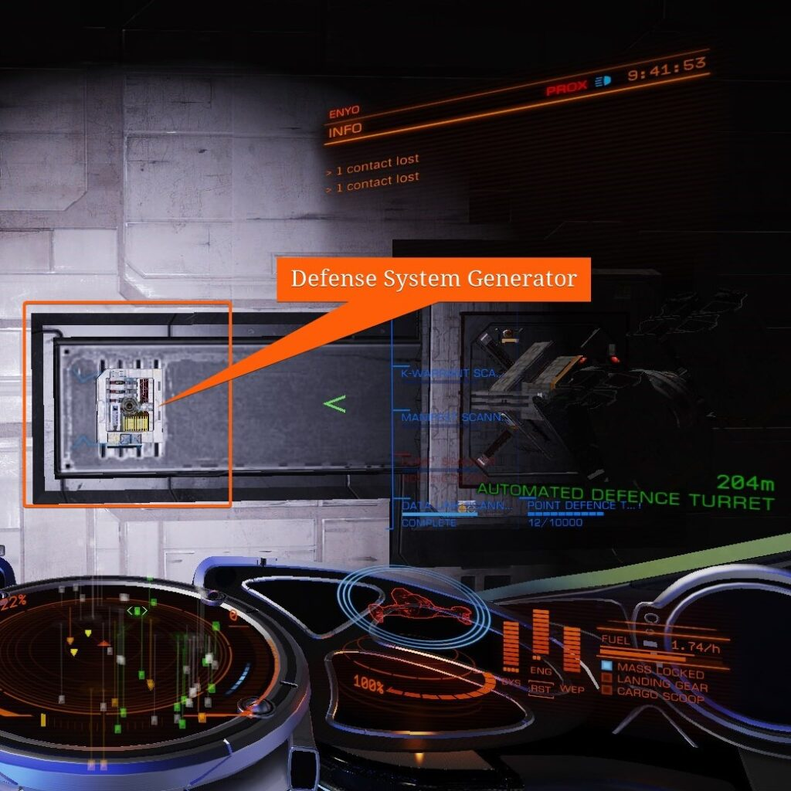
Figure 4.4.2 Defense System Generator
This subtarget can be attacked or rammed to take the Automated Defence Turret temporarily offline – an objective of some common missions*. ___ *Firing on it brings a bounty in the local jurisdiction, ramming does not.
4.5 Hackable Data Transmitter
Figure 4.5.1: Hackable Data Transmitter
A Data-Link-Scan reveals a Subtarget Limpet Docking Point a Recon-Limpet-Controller can target*.
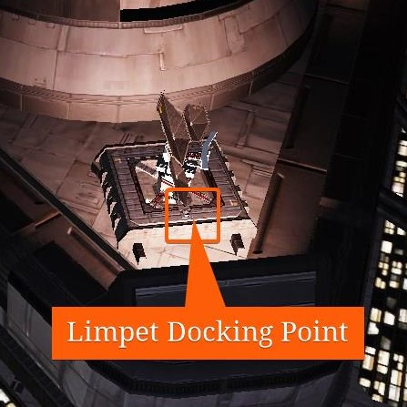
Figure 4.5.2: Hackable data Transmitter Limpet Docking Point
After a successfull hack a commander gets Data in their inventory, which can be used for engineering. ___ *If silent running is engaged before the limpet attaches to the Limpet Docking Point and during the full time of the hack there is no bounty or fine attached to it, but it will report a crime anyways to local system security, which will show up.
4.6 Hackable Comms Array
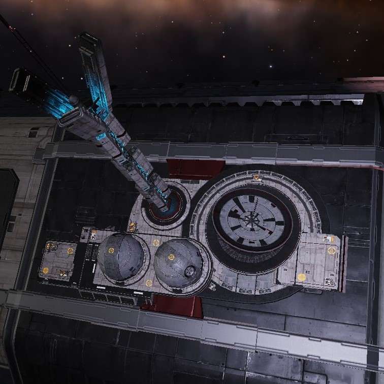
Figure 4.6.1: Hackable Comms Array
A Data-Link-Scan reveals a Subtarget Limpet Docking Point a Recon-Limpet-Controller can target*.
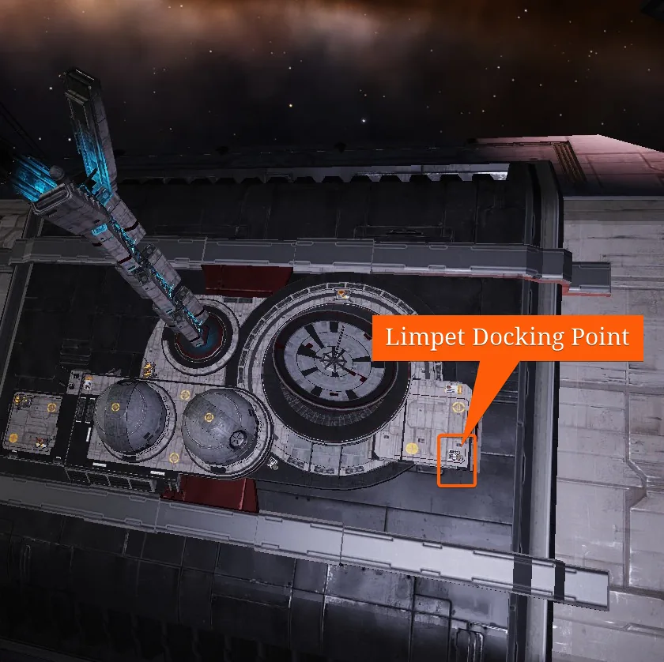
Figure 4.6.1: Hackable Comms Array Limpet Docking Point
After a successfull hack there are Data materials to be found close by, which can be collected with a collector-limpet or Cargo Hatch.
___
*If silent running is engaged before the limpet attaches to the Limpet Docking Point and during the full time of the hack there is no bounty or fine attached to it, but it will report a crime anyways to local system security, which will show up.
4.7 Cargo Bay and Escape Hatch
Cargo Bays and Escape Hatches are functionally identical, and numbered together from 0-x.
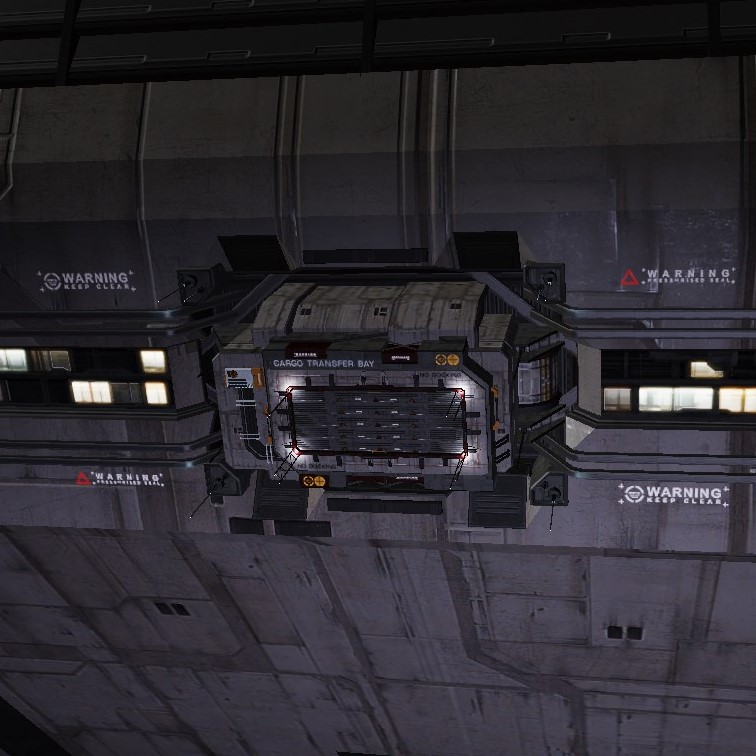
Figures 4.7.1: Cargo Bay
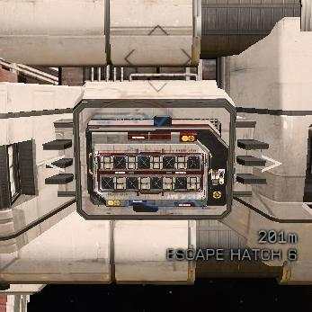
4.7.2: Escape Hatch
After a Data-Link-Scan has finished, a Manifest Scanner can temporarily reveal a Bays or Hatches Cargo under Contacts/Target.
A Subtarget Limpet Docking Point is revealed, which a Hatchbreaker-Limpet-Controller can target to extract Cargo*.
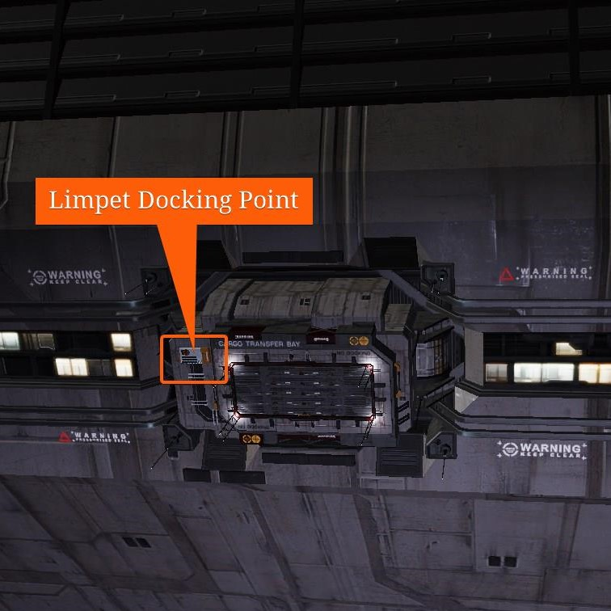
Figure 4.7.3: Cargo Bay and Escape Hatch Limpet Docking Point
After several Hatchbreaks the Cargo Bay or Escape Hatch stops working.
___
*If silent running is engaged before the limpet attaches to the Limpet Docking Point and during the full time of the hack there is no bounty or fine attached to it, but it will report a crime anyways to local system security, which will show up, and can fine for stolen cargo or destroy the Cargo still floating around.
4.8 Table of Megaship Types and Interactable Sub-targets
Type
Ship Log Uplink
Cargo Bay
Escape Hatch
Automated Defence Turret
Hackable Data Transmitter
Hackable Comms Array
Alcatraz-class Reformatory
1
5
6
1
Amaethon-class Cropper
1
5
2
1
Aquarius-class Tanker
1
2
4
1
Banner-class Hauler
1
4
5
1
Beckett-class Researcher
1
2
4
2
Bellmarsh-class Reformatotry
1
3
3
1
Bowman-class Researcher
1
1
1
1
Demeter-class Cropper
1
1
1
Dionysus-class Cropper
1
2
4
Freedom-class Surveyor
1
4
6
3
Gordon-class Hauler
1
1
1
Henry-class Hauler
1
1
Hercules-class Hauler
1
4
6
Hogan-class Hauler
1
4
4
1
James-class Hauler
1
3
1
Lichfield-class Reformatory
1
5
3
1
Lowell-class Researcher
2
2
1
Naphtha-class Tanker
1
1
2
Riker-class Reformatory
1
5
3
Sagan-class Traveller
1
2
1
Samson-class Hauler
1
4
4
1
Sanchez-class Researcher
1
3
8
2
2
Thomas-class Hauler
1
2
4
5. Megaship Cargo
5.1 Bulk-Commodities
Each Megaship Class has its fixed Bulk-Commodities in its Cargo Bays – its Default Cargo. While the total amount* of each Commodity can vary a bit, the type of commodity does not.
Neither legality, state of the controlling faction, population size, economic size, economy of waypoint or first waypoint have any effect.
Attacked Megaships have a different manifest. A non-attacked megaship showing any different Bulk Commodity than its default cargo is attacked shortly afterwards as part of a Raid. (see 6.)
Example: A Gordon-class Hauler has around 280 tons in its single Cargo Bay. You might find 250t or 300t. It transports Industrial Materials and Metals. Of Industrial Materials it has Insulating Membrane, Neofabric Insulation, Semiconductors – not any of the other Industrial Materials, Polymers for exampel. Of Metals it only has Beryllium, Copper, Gallium, Lithium, Palladium, Silver, Tantalum, and Titanium – not any other, Cobalt for example. If you find e.g. Osmium in a Gordon-class Haulers Cargo Bay it will be raided shortly afterwards.
For a list of which specific commodities a Megaship-class has please check out the single post on each Megaship-class in the codex.
5.2 Rare Commodities
Almost all Megaships have a low tonnage of Rare Goods in their Cargo Bays. Those Rare Goods are fixed by Category, but not by Commodity in most cases**.
Legality, distance to a Rares production, or whether they are in production at all have no effect***.
Example: A Gordon-class Hauler has a low tonnage of Rare Commodities of the Metals category. It can have all or some of any Rare Commodity of that Caegory, which are: Cherbones Blood Crystals, Helvetitj Pearls, Ngandandari Fire Opals, Platinum Alloy, Sothis Crystalline Gold****.
___
*which can be zero for Commodities having a low tonnage of that specific commodity in the default cargo.
** Prison Ships are a prominent exception to this rule. They only ever have Honesty Pills in their Cargo Bays, which are classified as Medicines, never one of the other Rare Good Medicines.
***So … does that mean a Rare blocked since forever like Wolf Fesh can be stolen from Megaship-classes having Rares of the Legal Drugs Category? Yes, this is exactly what it means.
****I know… neither Crystals nor Pearls nor Opals should be in the Metals Category, but hey – they are. And there is no Category of Rare Minerals.
5.3 Table of Megaship Bulk- and Rare-Cargo by Categories
Type
Total Tonnage (Average)
Rare Goods Categories
Commodity Categories*
Alcatraz-class Reformatory
750
Honesty Pills
Legal Drugs, Machinery, Medicines, Personal Effects, Waste, Weapons
*For a list of which specific bulk commodities of those categories a Megaship-class has please check out the single post on each Megaship-class in the codex.
6. Raids and Attacks
A Megaship can get raided or attacked by competing factions, an event commonly referred to as a Scenario. During such a Raid or Attack an independent commander is asked – but is not forced to do so – to either help the defending or the attacking side in the comms panel – similar to conflictzones.
During a Raid or Attack there are objectives issued and waves announced, if a commander has chosen to side.
Succesfully defending or attacking a megaship when choosing a side increases reputation with the faction the commander is siding with, and decreases reputation with the other faction.
A succesfull defense or attack also effects the factions economy, security and in-system influence, independently whether a commander chose a side.
There is good evidence a systems security level, controlling faction states, and type of megaship make such a Raid or Attack more likely, alas the political data scientists of Thompson Dokc have not produced any statistics on that (yet).
Example: In a low security system, with the controlling faction being in boom, a Gordon-class Hauler, megaship of the subtype Bulk Cargo Ship, will almost always get raided in a short timeframe. While in a High Security System, with the controlling faction being in no state, an Alcatraz Reformatory, megaship of the subtype Prison Ship, will not get raided even if you wait for hours.
7. List of Codex entries of all Non-Dockable Megaship-classes
Alcatraz-class Reformatory-The Alcatraz-class Reformatory is a class of Prison Ship. The class consists of a very large number of cell block modules; two are mounted at the front along the direction of the ship’s axis, with the third in the center of the axis set back. Two long power conduits run between them. A command module...
Amaethon-class Cropper-The Amaethon-class Cropper is a type of Agricultural Vessel. Around a slim central axis with a single small engine at the rear with the Shiplog Uplink, six huge Cargo Modules build the megaships rear body connected to the central axis. Each Cargo Pod Module has a set of a large and set of a small...
Aquarius-class Tanker-The Aquarius-class is a class of Tanker. The class consists of two hub modules surrounded by three long trusses of liquid tanks, and backed by a drive module each. Both sets of tanks are held together side by side by struts, on which a number of cargo containers are also mounted. Both Cargo Bays can...
Banner-class Hauler-The Banner-class Hauler is a class of Bulk Cargo Ship. The class consists of a command module on the front, with a cargo pod behind it, followed by a drive module. All four Cargo Bays sit on the cargo pod module as well as four Turrets. A fifth Turret sits on the drive module. Its...
Beckett-class Researcher-The Beckett-class Researcher is a type of Science Vessel. It consists of a central Axis with an engine module at the rear, mounting command modules and two rotating habitat rings. The rear consists of a large double engine module, a smaller double engine module, and four single manouvering engines. One turret and a fighter bay...
Bellmarsh-class Reformatory-The Bellmarsh-class is a class of Prison Ship. The class consists of a very large central seven-engine drive structure, flanked by two detention centers, and topped by a command module that faces perpendicular to the apparent front of the ship. Both detention center modules have one Turret in direction of travel. The front of the...
Bowman-class Researcher-The Bowman-class is a class of Science Vessel. The class consists of a science module on the front, a long central superstructure with a communications module in the middle, and a drive module on the rear. Hackable Data Transmitter and Hackable Comms Array are mounted on the drive module. The Cargo Bay can be found...
Collionson Class Asteroid Ship-A Collionson Class Asteroid Ship was last reported in orbit of the planet Hope, in the Gateway system; however the location of this ship is now unknown. Your ship’s navigation system will misspell Collionson as “Collinson” when it detects the signal source within 1,000 Ls of it, however your ship’s targeting system will spell it...
Demeter-class Cropper-The Demeter-class Cropper is a class of Agricultural Vessel. The class consists of a long central superstructure with a command module at the front, a rotating dual habitat ring behind it, followed by four rows of three agricultural domes, and a single-engine drive module. Cargo bay and its defending Turret can be found in direction...
Dionysus-class Cropper-The Dionysus-class is a class of Agricultural Vessel. The class consists of a long central superstructure with a command module on the front, followed by four rows of three agricultural domes mounted around the structure, a dual rotating habitat ring, a group of cargo containers mounted perpendicular to the structure, followed by the drive module....
Freedom-class Surveyor-The Freedom-class Surveyor is a type of Survey Vessel. The class consists of two command moduls along a central axis, connected by a rotating habitat double ring. The rear command module has a large engine module, two additional engine modules on separate structures on its sides, and a smaller third structure consisting of addtional tanks...
Gordon-class Hauler-The Gordon-class Hauler is a class of Bulk Cargo Ship. The class consists of two long struts containing cargo containers, mounted at 45º to each other, both backed by an engineering module and single-engine drive module, with a conn tower on the port drive module. The Ship Log Uplink is generally mounted on the conn...
Henry-class Hauler-The Henry-class Hauler is a class of Bulk Cargo Ship. The class consists of a long truss of tanks, flanked on either side by struts holding a large number of cargo containers; at the back of the ship is an engineering module, and a single-engine drive module with a conn tower on top. In direction...
Hercules-class Hauler-The Hercules-class Hauler is a class of Bulk Cargo Ship. The class consists of a forward command module, with the central superstructure completely surrounded by six cargo pods, followed by four engine modules. Two of adjacent cargo pods have Cargo Bays on the side, and two into direction of travel. It’s total Cargo auf around...
Hogan-class Hauler-The Hogan-class Hauler is a class of Bulk Cargo Ship. The class consists of a command module on the front followed by two rotating habitat rings, the first a smaller inner-only ring, and the second a dual habitat ring. Behind the habitat rings a small rake of six trusses holding three rows of tanks each...
James-class Hauler-The James-class Hauler is a type of Bulk Cargo Ship. The class consists of a two-engine module at the rear, and a command module in direction of travel. Those are connected by a single central axis with a huge cargo rack structure, on which many cargo containers are mounted as well as additional power capacitators....
Lichfield-class Reformatory-The Lichfield-class Reformatory is a type of Prison Ship. It consists of a large cell block module with two smaller engine modules at its rear. Both engine compartements at the rear have one large two-engine and a smaller two-engine module and 4 manouvering thrusters. A Hackable Comms Array is rearside on one of the two...
Lowell-class Researcher-The Lowell-class Researcher is a class of Science Vessel. The class consists of a science command module on the front, followed by a long superstructure of various modules, and a drive module on the rear. Towards direction of travel, one Cargo Bay can be found. In direction of rear there is a Hackable Data Transmitter,...
Naphtha-class Tanker-The Naphtha-class is a class of Tanker. The class consists of a long central superstructure fronted by a command module, then with six trusses of three rows of tanks each mounted around the superstructure down the length of the ship, with a gap in the tanks in the middle; at the rear of the ship...
Riker-class Reformatory-The Riker-class Reformatory is a class of Prison Ship. The class consists of a central cell block module at the front, flanked by two additional cell block modules mounted directly against it both with a dual-engine drive module at the rear. Each of those cell blocks with a drive module also house two Cargo bays,...
Sagan-class Traveller-The Sagan-class Traveller is a class of Tourist Ship. The class consists of a central superstructure with a command module on the front, a series of two rotating dual habitat rings, and a drive module on the rear. A Hackable Comms Array can be found on the drive module as well as the Ship Log...
Samson-class Hauler-The Samson-class Hauler is a class of Bulk Cargo Ship. The class consists of long central superstructure with a command module on the front, drive module on the back, and two cargo pods mounted along the structure in a butterfly formation. On the wingsides away from the central axis there are two Cargo Bays each....
Sanchez-class Researcher-The Sanchez-class is a class of Science Vessel. The class consists of two large cargo pod modules, connected to a power conduit as the center axis. Both cargo pod modules have a command module in direction of travel, and two two-engine modules at the rear. The central axis has a single engine module at the...
Thomas-class Hauler-The Thomas-class Hauler is a class of Bulk Cargo Ship. The class consists two trusses of tanks, flanked by struts holding cargo canisters, backed by an engineering module and a single-engine drive module, with a conn tower on top of the drive module. The Ship Log Uplink is generally mounted on the conn tower. One...
 Alcatraz-class Reformatory - The Alcatraz-class Reformatory is a class of Prison Ship. The class consists of a very large number of cell block modules; two are mounted at the front along the direction of the ship’s axis, with the third in the center of the axis set back. Two long power conduits run between them. A command module...
Alcatraz-class Reformatory - The Alcatraz-class Reformatory is a class of Prison Ship. The class consists of a very large number of cell block modules; two are mounted at the front along the direction of the ship’s axis, with the third in the center of the axis set back. Two long power conduits run between them. A command module... Aquarius-class Tanker - The Aquarius-class is a class of Tanker. The class consists of two hub modules surrounded by three long trusses of liquid tanks, and backed by a drive module each. Both sets of tanks are held together side by side by struts, on which a number of cargo containers are also mounted. Both Cargo Bays can...
Aquarius-class Tanker - The Aquarius-class is a class of Tanker. The class consists of two hub modules surrounded by three long trusses of liquid tanks, and backed by a drive module each. Both sets of tanks are held together side by side by struts, on which a number of cargo containers are also mounted. Both Cargo Bays can... Banner-class Hauler - The Banner-class Hauler is a class of Bulk Cargo Ship. The class consists of a command module on the front, with a cargo pod behind it, followed by a drive module. All four Cargo Bays sit on the cargo pod module as well as four Turrets. A fifth Turret sits on the drive module. Its...
Banner-class Hauler - The Banner-class Hauler is a class of Bulk Cargo Ship. The class consists of a command module on the front, with a cargo pod behind it, followed by a drive module. All four Cargo Bays sit on the cargo pod module as well as four Turrets. A fifth Turret sits on the drive module. Its... Bellmarsh-class Reformatory - The Bellmarsh-class is a class of Prison Ship. The class consists of a very large central seven-engine drive structure, flanked by two detention centers, and topped by a command module that faces perpendicular to the apparent front of the ship. Both detention center modules have one Turret in direction of travel. The front of the...
Bellmarsh-class Reformatory - The Bellmarsh-class is a class of Prison Ship. The class consists of a very large central seven-engine drive structure, flanked by two detention centers, and topped by a command module that faces perpendicular to the apparent front of the ship. Both detention center modules have one Turret in direction of travel. The front of the... Bowman-class Researcher - The Bowman-class is a class of Science Vessel. The class consists of a science module on the front, a long central superstructure with a communications module in the middle, and a drive module on the rear. Hackable Data Transmitter and Hackable Comms Array are mounted on the drive module. The Cargo Bay can be found...
Bowman-class Researcher - The Bowman-class is a class of Science Vessel. The class consists of a science module on the front, a long central superstructure with a communications module in the middle, and a drive module on the rear. Hackable Data Transmitter and Hackable Comms Array are mounted on the drive module. The Cargo Bay can be found... Dionysus-class Cropper - The Dionysus-class is a class of Agricultural Vessel. The class consists of a long central superstructure with a command module on the front, followed by four rows of three agricultural domes mounted around the structure, a dual rotating habitat ring, a group of cargo containers mounted perpendicular to the structure, followed by the drive module....
Dionysus-class Cropper - The Dionysus-class is a class of Agricultural Vessel. The class consists of a long central superstructure with a command module on the front, followed by four rows of three agricultural domes mounted around the structure, a dual rotating habitat ring, a group of cargo containers mounted perpendicular to the structure, followed by the drive module.... Henry-class Hauler - The Henry-class Hauler is a class of Bulk Cargo Ship. The class consists of a long truss of tanks, flanked on either side by struts holding a large number of cargo containers; at the back of the ship is an engineering module, and a single-engine drive module with a conn tower on top. In direction...
Henry-class Hauler - The Henry-class Hauler is a class of Bulk Cargo Ship. The class consists of a long truss of tanks, flanked on either side by struts holding a large number of cargo containers; at the back of the ship is an engineering module, and a single-engine drive module with a conn tower on top. In direction... Hercules-class Hauler - The Hercules-class Hauler is a class of Bulk Cargo Ship. The class consists of a forward command module, with the central superstructure completely surrounded by six cargo pods, followed by four engine modules. Two of adjacent cargo pods have Cargo Bays on the side, and two into direction of travel. It’s total Cargo auf around...
Hercules-class Hauler - The Hercules-class Hauler is a class of Bulk Cargo Ship. The class consists of a forward command module, with the central superstructure completely surrounded by six cargo pods, followed by four engine modules. Two of adjacent cargo pods have Cargo Bays on the side, and two into direction of travel. It’s total Cargo auf around... Lowell-class Researcher - The Lowell-class Researcher is a class of Science Vessel. The class consists of a science command module on the front, followed by a long superstructure of various modules, and a drive module on the rear. Towards direction of travel, one Cargo Bay can be found. In direction of rear there is a Hackable Data Transmitter,...
Lowell-class Researcher - The Lowell-class Researcher is a class of Science Vessel. The class consists of a science command module on the front, followed by a long superstructure of various modules, and a drive module on the rear. Towards direction of travel, one Cargo Bay can be found. In direction of rear there is a Hackable Data Transmitter,... Riker-class Reformatory - The Riker-class Reformatory is a class of Prison Ship. The class consists of a central cell block module at the front, flanked by two additional cell block modules mounted directly against it both with a dual-engine drive module at the rear. Each of those cell blocks with a drive module also house two Cargo bays,...
Riker-class Reformatory - The Riker-class Reformatory is a class of Prison Ship. The class consists of a central cell block module at the front, flanked by two additional cell block modules mounted directly against it both with a dual-engine drive module at the rear. Each of those cell blocks with a drive module also house two Cargo bays,... Sagan-class Traveller - The Sagan-class Traveller is a class of Tourist Ship. The class consists of a central superstructure with a command module on the front, a series of two rotating dual habitat rings, and a drive module on the rear. A Hackable Comms Array can be found on the drive module as well as the Ship Log...
Sagan-class Traveller - The Sagan-class Traveller is a class of Tourist Ship. The class consists of a central superstructure with a command module on the front, a series of two rotating dual habitat rings, and a drive module on the rear. A Hackable Comms Array can be found on the drive module as well as the Ship Log... Samson-class Hauler - The Samson-class Hauler is a class of Bulk Cargo Ship. The class consists of long central superstructure with a command module on the front, drive module on the back, and two cargo pods mounted along the structure in a butterfly formation. On the wingsides away from the central axis there are two Cargo Bays each....
Samson-class Hauler - The Samson-class Hauler is a class of Bulk Cargo Ship. The class consists of long central superstructure with a command module on the front, drive module on the back, and two cargo pods mounted along the structure in a butterfly formation. On the wingsides away from the central axis there are two Cargo Bays each.... Thomas-class Hauler - The Thomas-class Hauler is a class of Bulk Cargo Ship. The class consists two trusses of tanks, flanked by struts holding cargo canisters, backed by an engineering module and a single-engine drive module, with a conn tower on top of the drive module. The Ship Log Uplink is generally mounted on the conn tower. One...
Thomas-class Hauler - The Thomas-class Hauler is a class of Bulk Cargo Ship. The class consists two trusses of tanks, flanked by struts holding cargo canisters, backed by an engineering module and a single-engine drive module, with a conn tower on top of the drive module. The Ship Log Uplink is generally mounted on the conn tower. One...